fir.im
注册fir.im账号
去
http://account.fir.im/users/sign_up
注册，去填写注册信息：
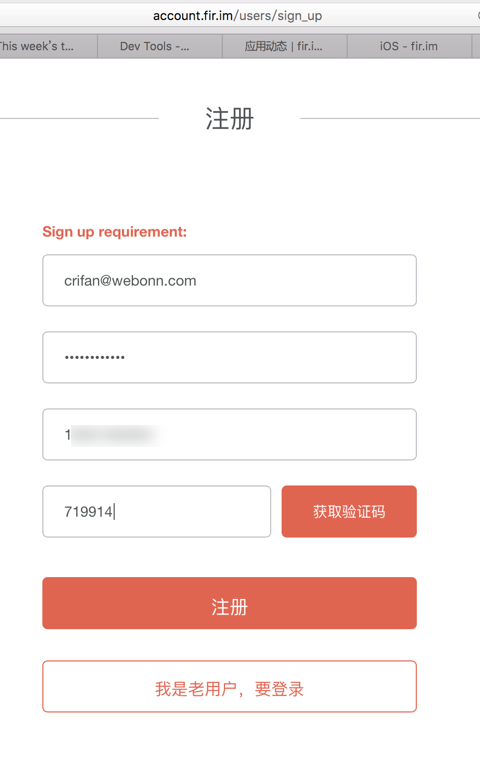
然后提示注册成功：

之后会收到确认邮件：
然后即可用新注册的账号去的登录了：
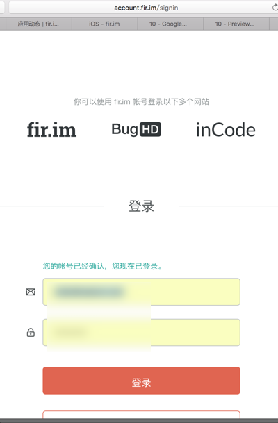
上传并发布app
之后，即可进入fir.im管理页面：
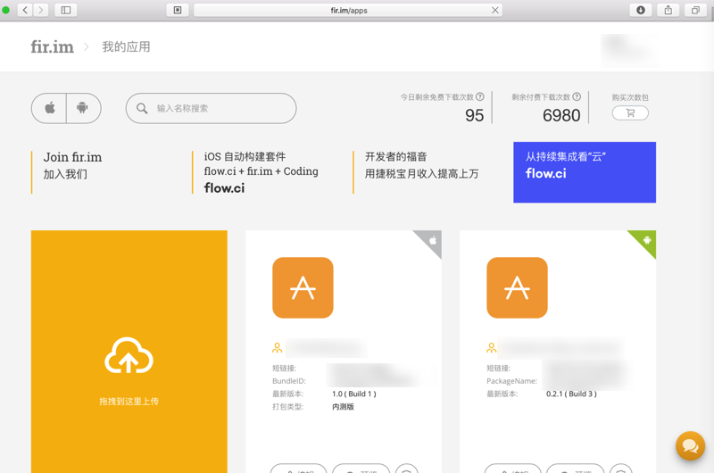
然后即可上传相应的app：
iOS的app
比如此处上传的是iOS的app：
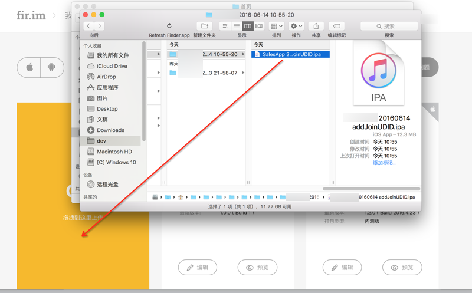
然后fir.im会自动检测出版本号，日期，版本类型等信息，接着输入对应的要发布的app的地址等信息：
点击开始上传后，显示进度：
上传完毕后，即可自动跳转到后台管理页面，看到已上传的app的各种信息：
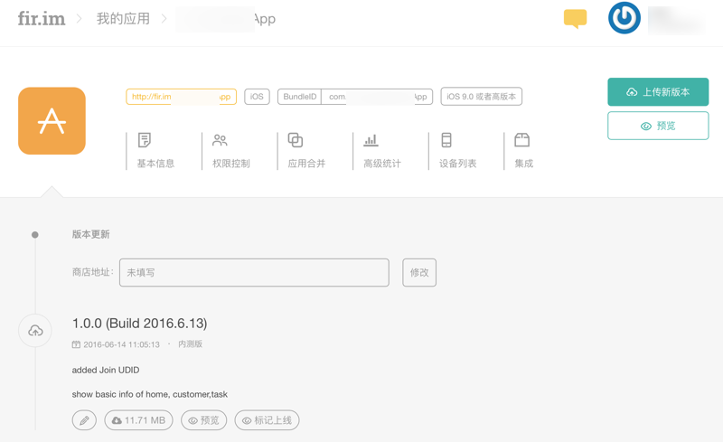
对于iOS来说，点击设备列表还可以看到已经注册的设备：
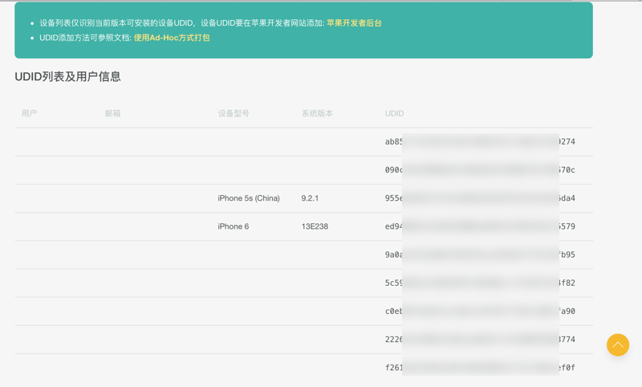
相应的，去打开对应的fir.im的地址：
XxxYyyApp – fir.im
后，可以看到对应的app下载页面的信息：
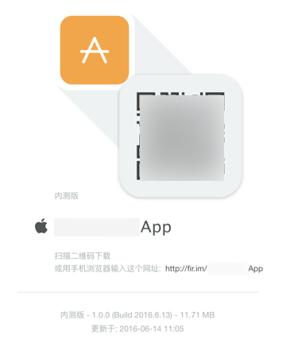
通过iPhone等去打开后，可以点击去下载并安装。
Android的app
Android的app的上传和信息管理，也是类似的，就不重复介绍了。
列出部分截图供参考：
信息管理：
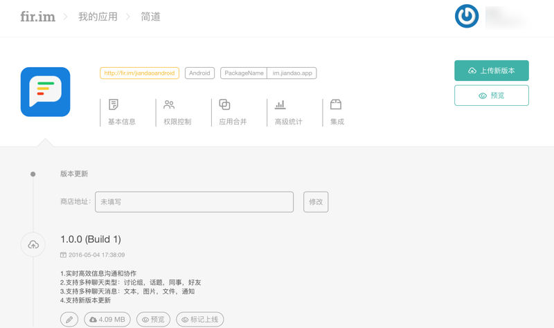
基本信息：
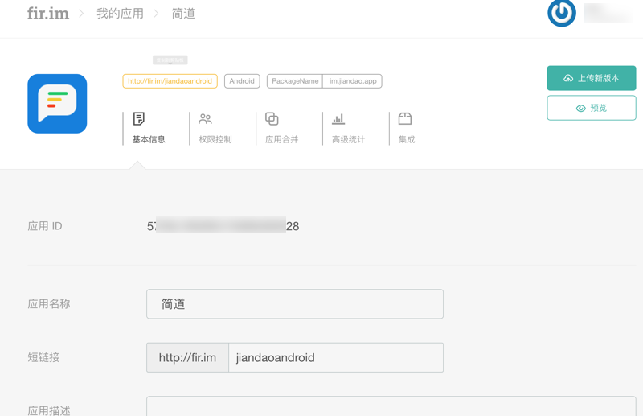
其他管理功能
此处再去看看其他一些额外的功能：
权限控制：
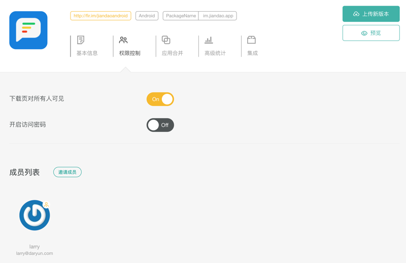
应用合并：
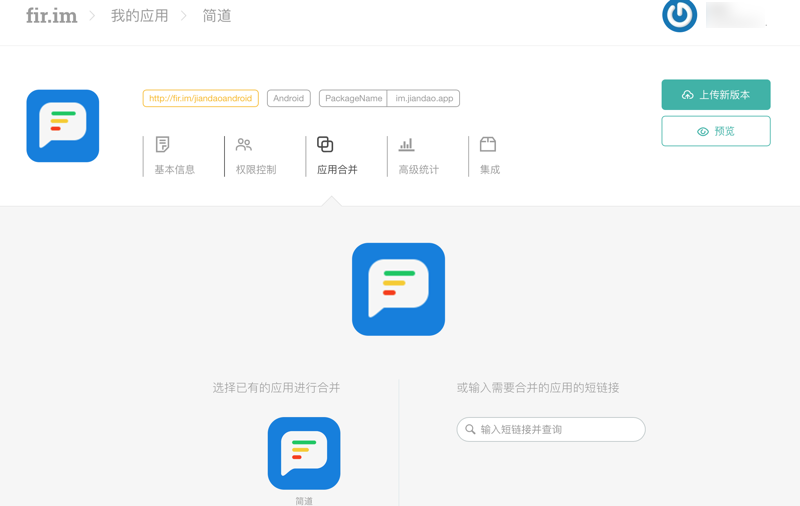
主要是用来实现，对于同一个app的不同平台，比如iOS和Android的话，可以合并在一起，便于管理：
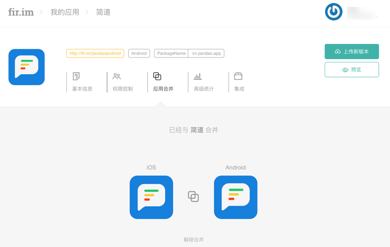
高级统计：
集成：
下载fir.im上的app
用手机端去打开对应页面，然后按照提示去点击下载即可。
iOS的错误：<strong>无法下载应用程序 此时无法安装</strong>
iPhone等iOS设备中，有时候去下载fir.im上的app时，会提示出错：无法下载应用程序 此时无法安装
其根本原因是：此APP开发时配置是最低只支持iOS 9.0，而此处iPhone系统版本是iOS 8.3，由于版本太低而无法安装
吐槽：还是iPhone系统的提示不够智能，对于低版本的iOS系统，应该提示已下载但无法安装，原因是当前系统版本太低，这样用户就清楚错误原因了。
对此问题，fir.im 常见问题中也有总结：
第三种：打包时选择支持的 iOS 系统版本过高，低于设置的系统版本的 iOS 设备无法安装
解决方法： 降低打包时支持的 iOS 系统的最低版本。